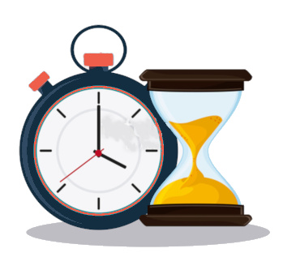

Make a difference
A few hours of your time sorting, packing, and serving food makes a bigger difference than you may realize. Half of all soup kitchens rely entirely on volunteers to keep up with the demand their community requires. Use I'll Serve Soup's platform to make that process easy and start helping now.
